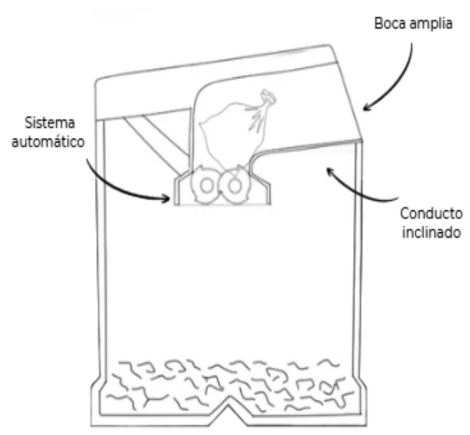
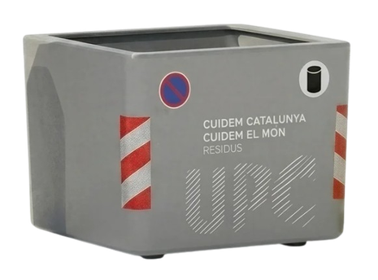
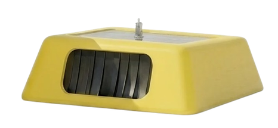
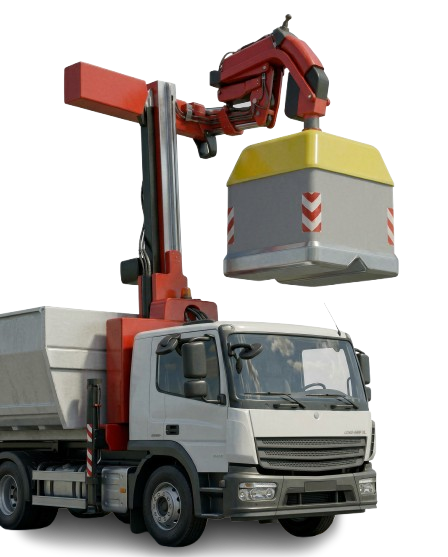

Nexus · EcoCompact
Tira el plástico, multiplica el impacto
Un contenedor de plástico que tritura los residuos en el momento en que entran. La boca es ancha, el conducto inclinado lleva la bolsa hasta dos discos de púas y lo que cae al fondo ocupa una fracción de lo que ocupaba antes. Más capacidad por contenedor, menos recogidas, menos camiones dando vueltas por la ciudad.

- Asignatura
- Taller de Diseño del Producto 3 · UPC EPSEVG
- Equipo
- Agüera Pérez, Ingrid · Arrocha Gascón, Daniel · Caballo Olivé, Laia · Cisa Vela, Marc
- Mi parte
- Modelado CAD del conjunto · sistema de trituración y compuertas · cálculo de resistencia · planos y acotación ISO · make or buy · organización de empresa y precios · coordinación del grupo
- Materiales
- Polietileno de alta densidad (carcasa) · vidrio de aluminosilicato (recubrimiento de la placa solar)
- Mercado
- B2B y B2G · Cataluña, España y UE
70 %
de espacio ahorrado
84
viajes de camión evitados
1,6 T
de CO₂ menos al año

- 01Un sensor de movimiento detecta al usuario y abre la compuerta: no hay que tocar nada.
- 02El conducto inclinado conduce la bolsa hasta los dos discos de púas, dieciséis por eje.
- 03La placa solar de la tapa alimenta el motor: el contenedor es autosuficiente y no necesita acometida.
- 04El gancho de elevación mantiene la recogida con camión grúa que ya usan los municipios.


